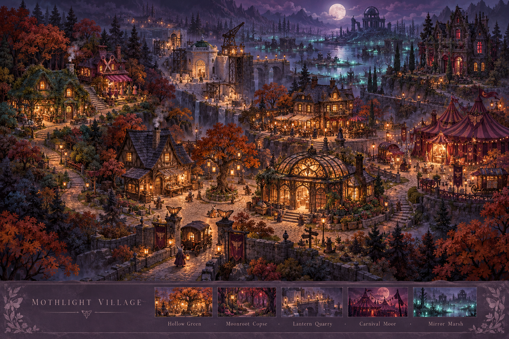
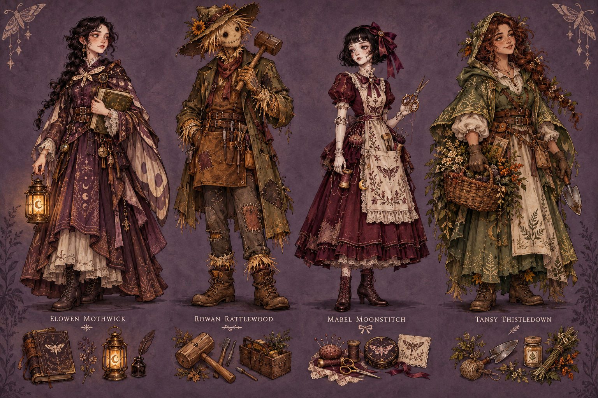
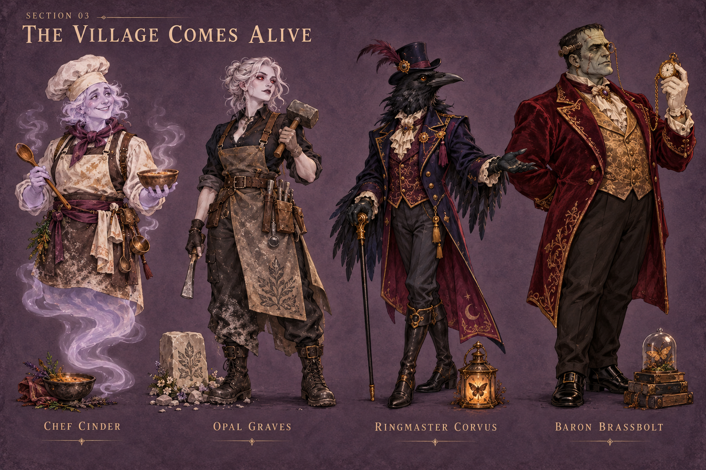
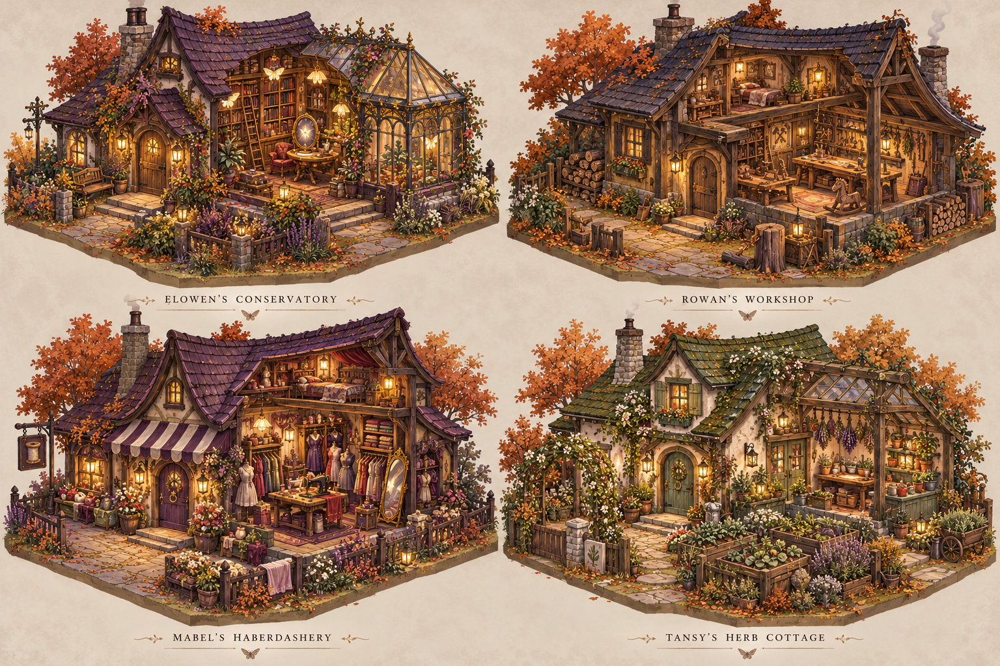
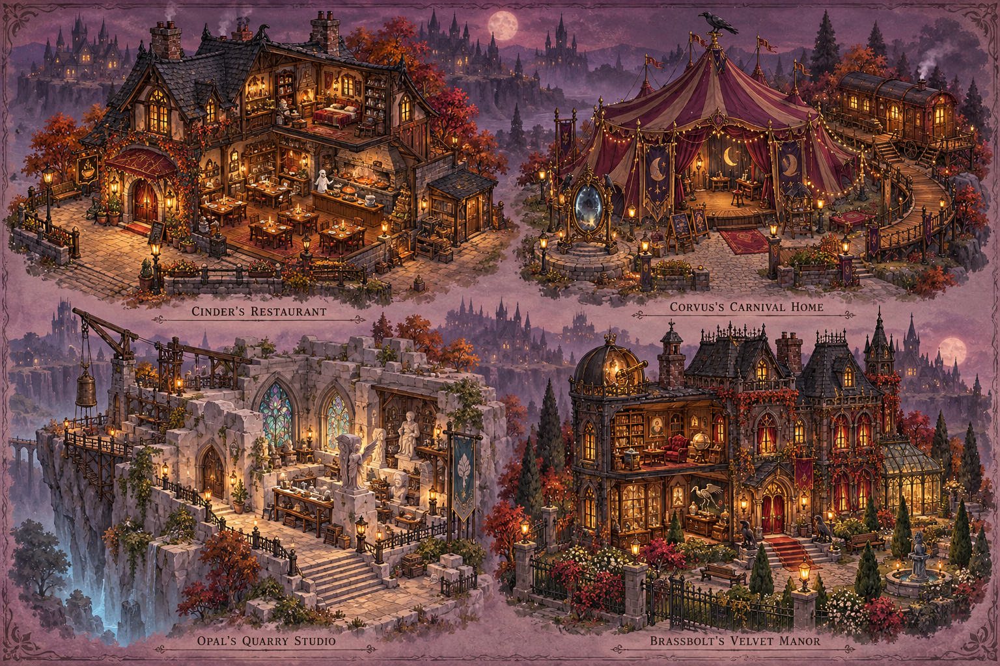
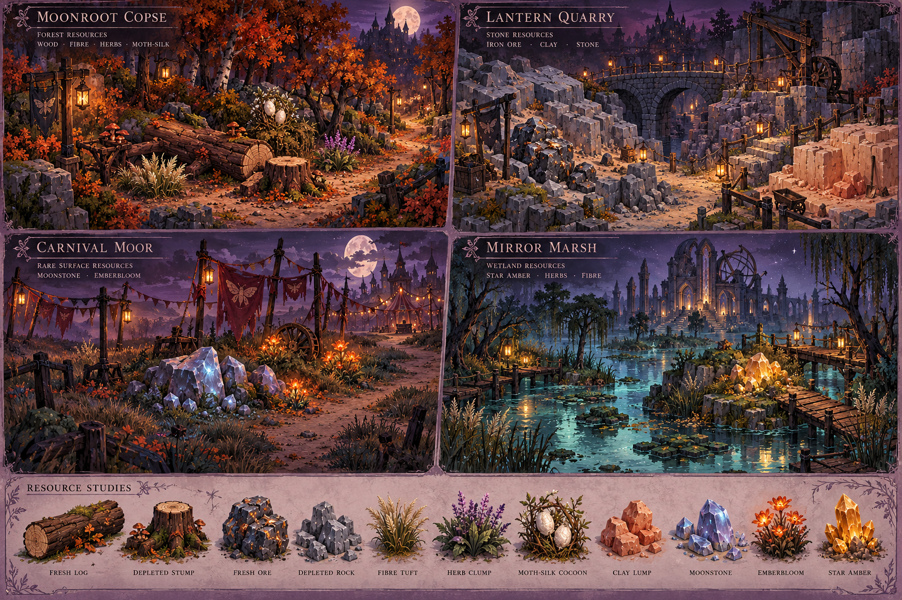
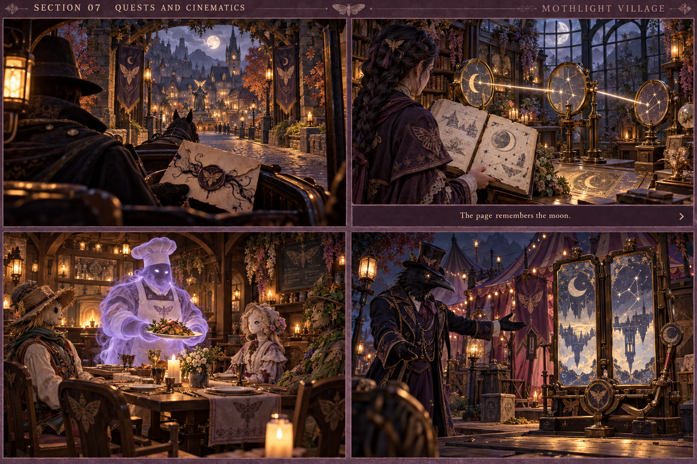
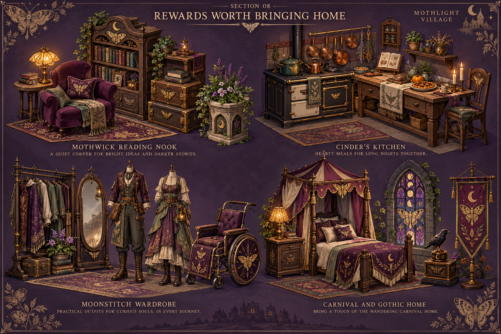
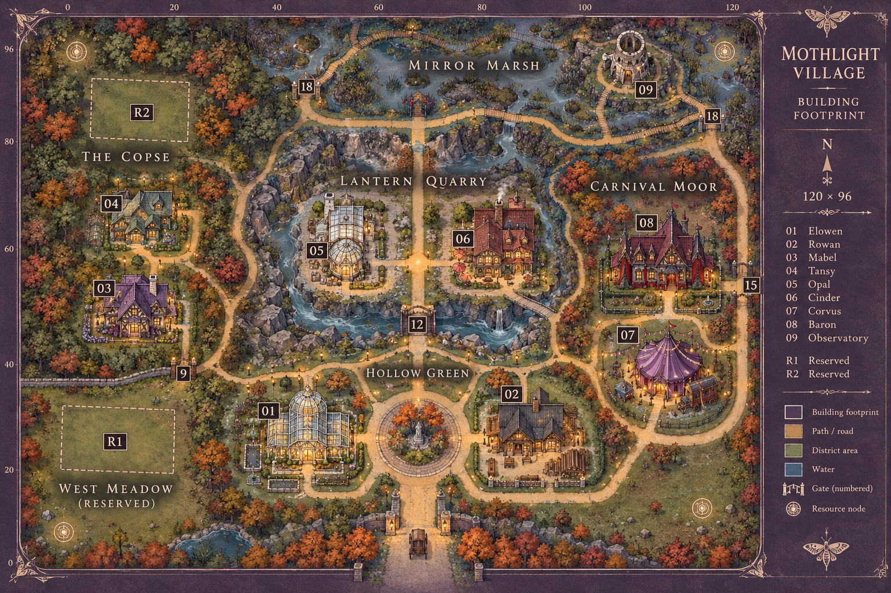

A realm beyond the farm
Moonlit roads, warm windows, room to grow.


Read the landmark silhouettes and road hierarchy: Hollow Green, Moonroot Copse, Lantern Quarry, Carnival Moor and Mirror Marsh. Reserve plots, usable entrances and accessible gathering routes.
This is an atmosphere composition, not a measured map. Use a separate carriage arrival; preserve the farm’s private homestead arch, Hollow House entrance and guest exits.
The first neighbours
Four crafts, four homes, four reasons to return.


Production check: one consistent scale and foot anchor; real alternating walking legs, readable facing and visible action tools.
The village comes alive
A supper, a masterpiece, a performance, a commission.


Keep the existing Baron recognisable. Cinder adds a village service and specialist branches; he does not erase the farm’s existing chef.
Homes with a purpose
Every roofline belongs to somebody.


Keep useful interiors in the footprint: reachable reading corners, workbenches, sewing tables and potting areas. Model entrances and upgrade phases before filling the gardens.
Use the existing voxel scale and placement rules. Doors, paths, seating and interactable furniture need real clearance, including Natalie’s purple wheelchair.
Places to gather
Public stages and private corners.


Separate restaurant seating, kitchen and supply routes. Corvus needs a performance space and private wagon; Opal needs a working studio; the Baron needs inhabited collector rooms.
Orders consume real supplies and guests retain finite wallets. Avoid duplicating the farm’s existing services. The manor is a resident home, not another Hollow House scare attraction.
A landscape worth exploring
Materials live in the world, not a wall of icons.


Use authored resource sockets clear of homes and travel lanes. District silhouettes, material colour and a restrained glow communicate rarity; avoid giant floating loot crystals.
The roadmap sets cooldowns, yields and caps. Full bags leave a node untouched; no reload rerolls or offline stockpiles. Rare star amber belongs to optional cosmetics, never a random story gate.
Small mysteries, memorable moments
A clue to understand, a place to change.


Use short staged gestures, readable clues and calm framing. Make routine scenes skippable and replayable; first input completes the typed line, next advances.
Pair colour and sound with symbols/text. Provide progressive hints and equally rewarded assisted solutions. Reduced motion keeps steady framing; skip/replay must never duplicate or block a reward.
Bring something wonderful home
Useful discoveries, beautiful collections, personal touches.


Link collections to their maker: Elowen’s library, Rowan’s workshop, Cinder’s kitchen, Mabel’s wardrobe, Opal’s stonework and Corvus’s stage. Keep a shared furniture angle and believable size.
Use approved Shane/Natalie references for production costumes. Preserve the purple wheelchair as a usable option, with plait-compatible headwear and consistent character proportions.
Room for a living village
A proposed build map, with space for every chapter.


Keep broad connected routes, clear arrival/exit space, reserved home plots and district gates. Stage construction without obstructing future paths, reachable doors or resource approaches.
Use the written tables and JSON for footprints, positions and clearance. Generated labels and apparent scale may drift. Validate collision, wheelchair access, navigation and camera framing in the real engine.